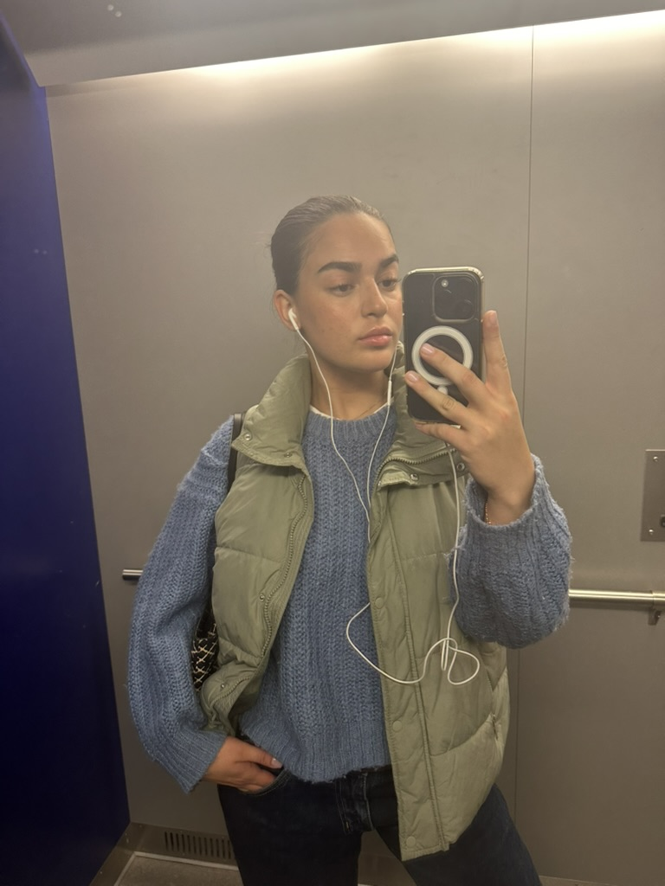

My name is Nivin Muhamed, I am 20 years old and I am originally from a town called Gislaved. I moved to Jönköping about five months ago for my studies. Since I moved I have stated my studies at Jth and it has been so much fun, both school and what I am doing in my free time. Back at home in Gislaved I have my family, my two younger sisters and my mom and dad.
A little more about me is that I love volleyboll but I currently do not play it, they have a team here at school but I do not really think I will be able to make up time for that while everything else is going on. Besides my studies I have also gotten the chans to be apart of the schools party committe, I have so much fun with that but with that it goes a lot of time for that, but I will try to make it work! Anyways, thats just a little bit about me, bye!